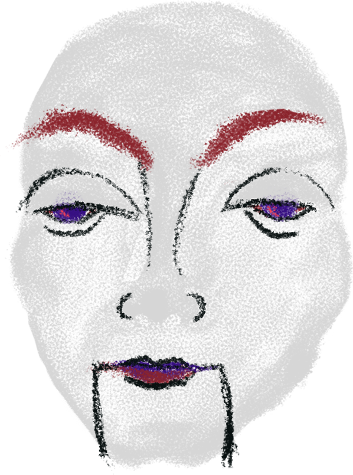

You arrive in a large room with two doors at the far end. Old wallpaper peels from the walls, and in the middle of the room, there's a pedestal.
On the pedestal stands a puppet, a bunraku.
You wave your hand (cursor) in front of its face for a moment, wondering if you can take the key it holds in its hands.
Take the key
Go to the left door
Go to the right door